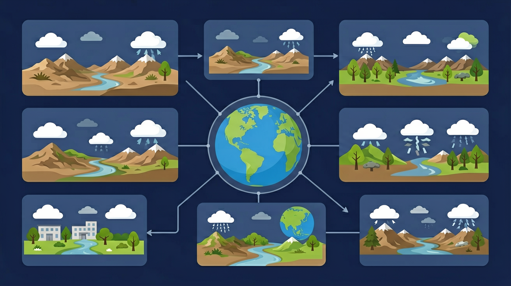

地理课程内容结构中的“认识全球”部分，将地球整体作为学习对象，认识地球所处的宇宙环境、地球的自转和公转运动、地球表层的自然和人文环境。

🎯 能说出地球内部圈层结构及岩石圈范围
🎯 能判断气候类型与纬度、海陆位置的关系
🎯 能分析等高线地形图中山谷、山脊的判读方法
❓ 为什么说地球是个'大水球'，但淡水资源却很少？
❓ 地球自转和公转到底哪个让夏天更热？
❓ 等高线地图上怎么看出哪里最容易发洪水？
学完这一课，这些问题你都能自信地回答。
关于地球自转的正确说法是？
下列比例尺最大的是？
地球基础知识是初中地理的重要内容。地理课程内容结构中的“认识全球”部分，将地球整体作为学习对象，认识地球所处的宇宙环境、地球的自转和公转运动、地球表层的自然和人文环境。
“地理工具”侧重地球仪、地图的基础知识和应用, “地理实践”则以多种方式贯穿全部课程内容。
点击时代/图层按钮切换地图；悬停边界，点击城市标记查看说明。
迁移任务：找一道与「地球基础知识」相关的练习题或生活情境，用本课方法完整解答一遍。
地球是一个两极稍扁、赤道略鼓的不规则球体。认识地球要抓住形状、大小、表层海陆分布等基本事实。地球仪是地球的模型，可帮助建立空间观念。学习地理从“认识我们的家园”开始。
用地球仪观察赤道、两极、海陆轮廓；把抽象数据（半径、周长）与可感知现象联系。
常见误区：常见误区是凭地图直觉以为陆地很多，忽视投影与视野偏差。
地球表面海洋与陆地面积大约是？
1. 卫星导航系统校准：GPS卫星轨道高度20,200km，每颗卫星携带4个原子钟。由于地球自转产生的科里奥利力效应，地面接收器必须根据自转速度（赤道465m/s）进行位置补偿。2023年北斗三号系统定位误差已缩小至1.5米，正是基于精确的地球自转参数建模。
2. 极地科学考察规划：中国雪龙号极地科考船选择12月抵达南极中山站（69°22'S），此时南极处于极昼期，日均日照21.5小时。这种时令选择直接运用了地球公转引起的太阳直射点回归运动知识，太阳在冬至日直射南回归线（23°26'S）。
3. 跨洋航班航线优化：北京飞纽约的航班通常取道北极航线（约13,000km），比太平洋航线缩短2,000km。这是应用地球球体特性与经纬网知识，通过大圆航线计算实现。Flightradar24数据显示，此类航线每年节省燃油约120万吨，相当于减少380万吨CO₂排放。
1. 若地球自转轴倾角变为35°，现有气候带分布将如何重构？分析提示：注意热带与寒带范围的变化关键取决于黄赤交角数值，温带实质是过渡带。可对比火星25.2°倾角造成的季节特征，思考太阳直射点移动范围扩大对季风环流的影响。
2. 为什么说"地球形状是梨形"的描述不够准确？引导思考：从实测数据切入，地球赤道半径6,378km与极半径6,357km的差异（扁率1/298）才是主要特征。NASA重力场测量显示南极凹陷约30米、北极隆起10米，这种微小起伏相对于地球尺度相当于篮球表面0.2毫米的凹凸。
从仰望星空时的朴素疑问出发——为什么太阳每天东升西落？这引出地球自转的基本事实。通过傅科摆实验（巴黎先贤祠摆长67米，摆动平面每小时顺时针偏转11°）这种直观证据，我们确认地球自转的同时，接着发现其引发的科里奥利力效应：北半球河流右岸侵蚀更甚（如长江荆江段右岸冲刷量年均超左岸37%）。当视线扩大到年周期，地球公转轨道椭圆率0.0167带来的近日点（1月初）与远日点（7月初）3.3%的日照强度差异，解释了为何北半球冬季反而离太阳更近。在此过程中，黄赤交角的存在造就了四季更替，以北京为例，夏至日正午太阳高度73.5°与冬至日26.5°的悬殊，导致地面单位面积接收的太阳辐射相差3.8倍。最后将这些原理应用于解释极地科考窗口期选择、卫星发射轨道计算等实际问题时，地球形状参数（赤道周长40,075km）与自转速度的精确测量，就成为航天器入轨精度控制的关键。整套知识体系如同地球仪上的经纬网，将看似孤立的现象编织成有机的整体。
1. 昼夜交替成因混淆：许多学生误认为昼夜变化是由地球公转引起的。实际这是地球自转（周期23小时56分4秒）导致的太阳直射点移动现象。认知根源在于将"年周期"和"日周期"运动混为一谈。正确理解应对比自转轴23.5°倾斜与公转轨道面形成的黄赤交角，例如北半球夏至时北极圈出现极昼，此时地球正处于远日点附近（7月初约1.0167AU），与昼夜更替无关。
2. 时区计算绝对化：学生常机械认为经度每15°时差必为1小时。实际上时区划分还受政区边界调整，如中国统一采用东八区（UTC+8），横跨5个理论时区。认知根源是忽视人文地理因素对自然规律的修正。正确案例显示乌鲁木齐（87°36'E）理论属东六区，实际使用东八区时间，导致当地正午约在14:30出现。
3. 地壳厚度认知偏差：普遍误以为陆地地壳（平均35km）比大洋地壳（平均7km）厚的规律适用于所有区域。实际上青藏高原最厚达70km，而马里亚纳海沟仅5km。认知根源在于将"平均厚度"简单绝对化，忽视板块构造运动的差异性。正确理解需要结合大陆漂移说，解释印度板块撞击欧亚板块形成的喜马拉雅造山带特例。
复制提示词到 AI 学伴，生成「地球基础知识」的示意图或结构提纲；也可以上传你手绘的示意图，请 AI 学伴点评。
复制后可粘贴到 AI 学伴继续对话。
关于地球运动的正确表述是
分析学校日晷一年中正午影长记录数据表
关于地球基础知识的学习，哪种做法最科学？
选一个并查看反馈。
先独立作答，再点选项查看对错与错因。
日晷影子在一天中最短的时刻，当地太阳位置是
若某地夏季日晷正午影长比冬季短，主要因为
北极圈内出现极昼现象时，地球运行至公转轨道的
地球自转方向是自____向____，周期约为____小时
答案：西,东,24
地球自西向东转导致太阳东升西落
北半球夏至日时，太阳直射____回归线，南极圈内出现____现象
答案：北,极夜
太阳直射点最北时南极圈无阳光
✅ 所有经线等长，纬线长度不等
💡 混淆经线（半圆）与经线圈（整圆）概念
✅ 等高线凸向高处为山谷，凸向低处为山脊
💡 未掌握'凸高为谷，凸低为脊'口诀
口诀：'三圈环流记心头，低纬上升高纬流'
类比：地球圈层像鸡蛋，地壳是蛋壳地幔是蛋清
（中考真题）右图所示区域最容易发生的地质灾害是？
（迁移题）某城市要建消防瞭望塔，最合适选址在？
（生活应用）野外遇洪水应往哪个方向逃生？
点击节点跳转到对应章节；可切换布局。